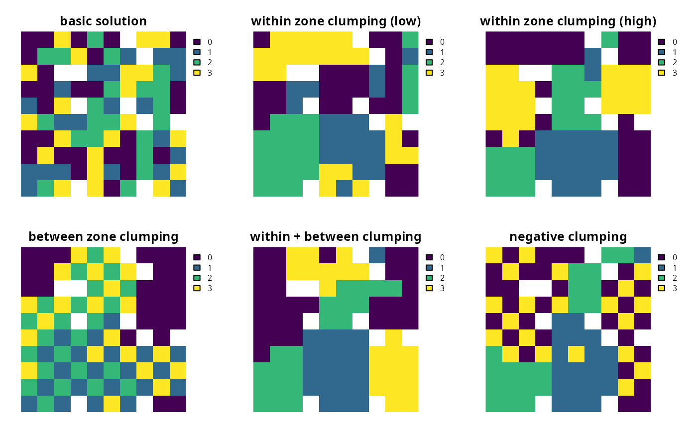

Add penalties to a conservation planning problem to favor
solutions that have planning units clumped together into contiguous areas.
add_boundary_penalties(x, penalty, edge_factor = rep(0.5, number_of_zones(x)), zones = diag(number_of_zones(x)), data = NULL)
| x |
|
|---|---|
| penalty |
|
| edge_factor |
|
| zones |
|
| data |
|
ConservationProblem-class object with the penalties
added to it.
This function adds penalties to a conservation planning problem
to penalize fragmented solutions. It was is inspired by Ball et al.
(2009) and Beyer et al. (2016). The penalty argument is
equivalent to the boundary length modifier (BLM) used in
Marxan. Note that this function can only
be used to represent symmetric relationships between planning units. If
asymmetric relationships are required, use the
add_connectivity_penalties function.
The argument to data can be specified in several different ways:
NULLthe boundary data are automatically calculated
using the boundary_matrix function. This argument is the
default. Note that the boundary data must be manually defined
using one of the other formats below when the planning unit data
in the argument to x is not spatially referenced (e.g.
in data.frame or numeric format).
matrix, Matrixwhere rows and columns represent different planning units and the value of each cell represents the amount of shared boundary length between two different planning units. Cells that occur along the matrix diagonal represent the amount of exposed boundary associated with each planning unit that has no neighbor (e.g. these value might pertain the length of coastline in a planning unit).
data.framecontaining the columns "id1",
"id2", and "boundary". The values in the column
"boundary" show the total amount of shared boundary between the
two planning units indicated the columns "id1" and "id2".
This format follows the the standard Marxan input format. Note
that this function requires symmetric boundary data, and so the
argument to data cannot have the columns "zone1" and
code"zone2" to specify different amounts of shared boundary lengths
for different zones. Instead, when dealing with problems with multiple
zones, the argument to zones should be used to control the
relative importance of spatially clumping planning units together when
they are allocated to different zones.
The boundary penalties are calculated using the following equations. Let
\(I\) represent the set of planning units, \(Z\) represent
the set of management zones, and $$X_iz$$ represent the decision
variable for planning unit \(i\) for in zone \(z\) (e.g. with binary
values one indicating if planning unit is allocated or not). Also, let
\(p\) represent the argument to penalty, \(E\) represent the
argument to edge_factor, \(W\) represent the matrix argument to
zones, and \(B\) represent the matrix argument to zones
(e.g. generated using boundary_matrix).
$$ \sum_{i}^{I} \sum_{j}^{I} \sum_{z}^{Z} (\mathit{ifelse}(i == j, E_z, 1) \times p \times W_{zz} B_{ij}) + \sum_{i}^{I} \sum_{j}^{I} \sum_{z}^{Z} \sum_{y}^{Z} (-2 \times p \times X_{iz} \times X_{jy} \times W_{zy} \times B_{ij})$$
Note that when the problem objective is to maximize some measure of benefit and not minimize some measure of cost, the term \(p\) is replaced with \(-p\).
Ball IR, Possingham HP, and Watts M (2009) Marxan and relatives: Software for spatial conservation prioritisation in Spatial conservation prioritisation: Quantitative methods and computational tools. Eds Moilanen A, Wilson KA, and Possingham HP. Oxford University Press, Oxford, UK.
Beyer HL, Dujardin Y, Watts ME, and Possingham HP (2016) Solving conservation planning problems with integer linear programming. Ecological Modelling, 228: 14--22.
# set seed for reproducibility set.seed(500) # load data data(sim_pu_raster, sim_features, sim_pu_zones_stack, sim_features_zones) # create minimal problem p1 <- problem(sim_pu_raster, sim_features) %>% add_min_set_objective() %>% add_relative_targets(0.2) %>% add_binary_decisions() %>% add_default_solver() # create problem with low boundary penalties p2 <- p1 %>% add_boundary_penalties(50, 1) # create problem with high boundary penalties but outer edges receive # half the penalty as inner edges p3 <- p1 %>% add_boundary_penalties(500, 0.5) # create a problem using precomputed boundary data bmat <- boundary_matrix(sim_pu_raster) p4 <- p1 %>% add_boundary_penalties(50, 1, data = bmat)# solve problems s <- stack(solve(p1), solve(p2), solve(p3), solve(p4))#> Optimize a model with 5 rows, 90 columns and 450 nonzeros #> Variable types: 0 continuous, 90 integer (90 binary) #> Coefficient statistics: #> Matrix range [2e-01, 9e-01] #> Objective range [2e+02, 2e+02] #> Bounds range [1e+00, 1e+00] #> RHS range [6e+00, 2e+01] #> Found heuristic solution: objective 4750.1073492 #> Presolve time: 0.00s #> Presolved: 5 rows, 90 columns, 450 nonzeros #> Variable types: 0 continuous, 90 integer (90 binary) #> Presolved: 5 rows, 90 columns, 450 nonzeros #> #> #> Root relaxation: objective 3.891498e+03, 16 iterations, 0.00 seconds #> #> Nodes | Current Node | Objective Bounds | Work #> Expl Unexpl | Obj Depth IntInf | Incumbent BestBd Gap | It/Node Time #> #> 0 0 3891.49802 0 4 4750.10735 3891.49802 18.1% - 0s #> H 0 0 3997.3009348 3891.49802 2.65% - 0s #> #> Explored 1 nodes (16 simplex iterations) in 0.00 seconds #> Thread count was 1 (of 4 available processors) #> #> Solution count 2: 3997.3 4750.11 #> #> Optimal solution found (tolerance 1.00e-01) #> Best objective 3.997300934792e+03, best bound 3.891498019516e+03, gap 2.6469% #> Optimize a model with 293 rows, 234 columns and 1026 nonzeros #> Variable types: 0 continuous, 234 integer (234 binary) #> Coefficient statistics: #> Matrix range [2e-01, 1e+00] #> Objective range [1e+01, 2e+02] #> Bounds range [1e+00, 1e+00] #> RHS range [6e+00, 2e+01] #> Found heuristic solution: objective 18847.196992 #> Found heuristic solution: objective 4940.1073492 #> Presolve time: 0.00s #> Presolved: 293 rows, 234 columns, 1026 nonzeros #> Variable types: 0 continuous, 234 integer (234 binary) #> Presolved: 293 rows, 234 columns, 1026 nonzeros #> #> #> Root relaxation: objective 4.082446e+03, 164 iterations, 0.00 seconds #> #> Nodes | Current Node | Objective Bounds | Work #> Expl Unexpl | Obj Depth IntInf | Incumbent BestBd Gap | It/Node Time #> #> 0 0 4082.44620 0 75 4940.10735 4082.44620 17.4% - 0s #> H 0 0 4456.3212783 4082.44620 8.39% - 0s #> #> Explored 1 nodes (164 simplex iterations) in 0.01 seconds #> Thread count was 1 (of 4 available processors) #> #> Solution count 3: 4456.32 4940.11 18847.2 #> #> Optimal solution found (tolerance 1.00e-01) #> Best objective 4.456321278292e+03, best bound 4.082446197431e+03, gap 8.3898% #> Optimize a model with 293 rows, 234 columns and 1026 nonzeros #> Variable types: 0 continuous, 234 integer (234 binary) #> Coefficient statistics: #> Matrix range [2e-01, 1e+00] #> Objective range [1e+02, 4e+02] #> Bounds range [1e+00, 1e+00] #> RHS range [6e+00, 2e+01] #> Found heuristic solution: objective 20287.196992 #> Found heuristic solution: objective 5850.1073492 #> Presolve time: 0.00s #> Presolved: 293 rows, 234 columns, 1026 nonzeros #> Variable types: 0 continuous, 234 integer (234 binary) #> Presolved: 293 rows, 234 columns, 1026 nonzeros #> #> #> Root relaxation: objective 4.530774e+03, 218 iterations, 0.00 seconds #> #> Nodes | Current Node | Objective Bounds | Work #> Expl Unexpl | Obj Depth IntInf | Incumbent BestBd Gap | It/Node Time #> #> 0 0 4530.77373 0 234 5850.10735 4530.77373 22.6% - 0s #> 0 0 4600.58760 0 232 5850.10735 4600.58760 21.4% - 0s #> 0 0 4615.37024 0 232 5850.10735 4615.37024 21.1% - 0s #> 0 0 4619.79170 0 233 5850.10735 4619.79170 21.0% - 0s #> 0 0 4658.33379 0 233 5850.10735 4658.33379 20.4% - 0s #> 0 0 4661.36147 0 233 5850.10735 4661.36147 20.3% - 0s #> H 0 0 5320.7189387 4661.36147 12.4% - 0s #> 0 2 4662.03991 0 233 5320.71894 4662.03991 12.4% - 0s #> H 81 71 5302.6819148 4674.82252 11.8% 16.4 0s #> H 157 83 5199.7448870 4706.97048 9.48% 15.2 0s #> #> Cutting planes: #> Gomory: 5 #> #> Explored 157 nodes (2757 simplex iterations) in 0.16 seconds #> Thread count was 1 (of 4 available processors) #> #> Solution count 5: 5199.74 5302.68 5320.72 ... 20287.2 #> #> Optimal solution found (tolerance 1.00e-01) #> Best objective 5.199744887004e+03, best bound 4.706970484223e+03, gap 9.4769% #> Optimize a model with 293 rows, 234 columns and 1026 nonzeros #> Variable types: 0 continuous, 234 integer (234 binary) #> Coefficient statistics: #> Matrix range [2e-01, 1e+00] #> Objective range [1e+01, 2e+02] #> Bounds range [1e+00, 1e+00] #> RHS range [6e+00, 2e+01] #> Found heuristic solution: objective 18847.196992 #> Found heuristic solution: objective 4940.1073492 #> Presolve time: 0.00s #> Presolved: 293 rows, 234 columns, 1026 nonzeros #> Variable types: 0 continuous, 234 integer (234 binary) #> Presolved: 293 rows, 234 columns, 1026 nonzeros #> #> #> Root relaxation: objective 4.082446e+03, 164 iterations, 0.00 seconds #> #> Nodes | Current Node | Objective Bounds | Work #> Expl Unexpl | Obj Depth IntInf | Incumbent BestBd Gap | It/Node Time #> #> 0 0 4082.44620 0 75 4940.10735 4082.44620 17.4% - 0s #> H 0 0 4456.3212783 4082.44620 8.39% - 0s #> #> Explored 1 nodes (164 simplex iterations) in 0.01 seconds #> Thread count was 1 (of 4 available processors) #> #> Solution count 3: 4456.32 4940.11 18847.2 #> #> Optimal solution found (tolerance 1.00e-01) #> Best objective 4.456321278292e+03, best bound 4.082446197431e+03, gap 8.3898%# plot solutions plot(s, main = c("basic solution", "small penalties", "high penalties", "precomputed data"), axes = FALSE, box = FALSE)# create minimal problem with multiple zones and limit the run-time for # solver to 10 seconds so this example doesn't take too long p5 <- problem(sim_pu_zones_stack, sim_features_zones) %>% add_min_set_objective() %>% add_relative_targets(matrix(0.2, nrow = 5, ncol = 3)) %>% add_binary_decisions() %>% add_default_solver(time_limit = 10) # create zone matrix which favors clumping planning units that are # allocated to the same zone together - note that this is the default zm6 <- diag(3) print(zm6)#> [,1] [,2] [,3] #> [1,] 1 0 0 #> [2,] 0 1 0 #> [3,] 0 0 1# create problem with the zone matrix and low penalties p6 <- p5 %>% add_boundary_penalties(50, zone = zm6) # create another problem with the same zone matrix and higher penalties p7 <- p5 %>% add_boundary_penalties(500, zone = zm6) # create zone matrix which favors clumping units that are allocated to # different zones together zm8 <- matrix(1, ncol = 3, nrow = 3) diag(zm8) <- 0 print(zm8)#> [,1] [,2] [,3] #> [1,] 0 1 1 #> [2,] 1 0 1 #> [3,] 1 1 0# create problem with the zone matrix p8 <- p5 %>% add_boundary_penalties(500, zone = zm8) # create zone matrix which strongly favors clumping units # that are allocated to the same zone together. It will also prefer # clumping planning units in zones 1 and 2 together over having # these planning units with no neighbors in the solution zm9 <- diag(3) zm9[upper.tri(zm9)] <- c(0.3, 0, 0) zm9[lower.tri(zm9)] <- zm9[upper.tri(zm9)] print(zm9)#> [,1] [,2] [,3] #> [1,] 1.0 0.3 0 #> [2,] 0.3 1.0 0 #> [3,] 0.0 0.0 1# create problem with the zone matrix p9 <- p5 %>% add_boundary_penalties(500, zone = zm9) # create zone matrix which favors clumping planning units in zones 1 and 2 # together, and favors planning units in zone 3 being spread out # (i.e. negative clumping) zm10 <- diag(3) zm10[3, 3] <- -1 print(zm10)#> [,1] [,2] [,3] #> [1,] 1 0 0 #> [2,] 0 1 0 #> [3,] 0 0 -1# create problem with the zone matrix p10 <- p5 %>% add_boundary_penalties(500, zone = zm10)# solve problems s2 <- stack(category_layer(solve(p5)), category_layer(solve(p6)), category_layer(solve(p7)), category_layer(solve(p8)), category_layer(solve(p9)), category_layer(solve(p10)))#> Optimize a model with 105 rows, 270 columns and 1620 nonzeros #> Variable types: 0 continuous, 270 integer (270 binary) #> Coefficient statistics: #> Matrix range [2e-01, 1e+00] #> Objective range [2e+02, 2e+02] #> Bounds range [1e+00, 1e+00] #> RHS range [1e+00, 2e+01] #> Found heuristic solution: objective 13244.599124 #> Presolve time: 0.00s #> Presolved: 105 rows, 270 columns, 1620 nonzeros #> Variable types: 0 continuous, 270 integer (270 binary) #> Presolved: 105 rows, 270 columns, 1620 nonzeros #> #> #> Root relaxation: objective 1.204675e+04, 188 iterations, 0.00 seconds #> #> Nodes | Current Node | Objective Bounds | Work #> Expl Unexpl | Obj Depth IntInf | Incumbent BestBd Gap | It/Node Time #> #> 0 0 12046.7536 0 14 13244.5991 12046.7536 9.04% - 0s #> #> Explored 1 nodes (188 simplex iterations) in 0.01 seconds #> Thread count was 1 (of 4 available processors) #> #> Solution count 1: 13244.6 #> #> Optimal solution found (tolerance 1.00e-01) #> Best objective 1.324459912364e+04, best bound 1.204675362644e+04, gap 9.0440% #> Optimize a model with 975 rows, 705 columns and 3360 nonzeros #> Variable types: 0 continuous, 705 integer (705 binary) #> Coefficient statistics: #> Matrix range [2e-01, 1e+00] #> Objective range [1e+01, 2e+02] #> Bounds range [1e+00, 1e+00] #> RHS range [1e+00, 2e+01] #> Found heuristic solution: objective 14119.599124 #> Presolve time: 0.01s #> Presolved: 975 rows, 705 columns, 3360 nonzeros #> Variable types: 0 continuous, 705 integer (705 binary) #> Presolved: 975 rows, 705 columns, 3360 nonzeros #> #> #> Root relaxation: objective 1.235057e+04, 672 iterations, 0.02 seconds #> #> Nodes | Current Node | Objective Bounds | Work #> Expl Unexpl | Obj Depth IntInf | Incumbent BestBd Gap | It/Node Time #> #> 0 0 12350.5709 0 366 14119.5991 12350.5709 12.5% - 0s #> H 0 0 13296.029839 12350.5709 7.11% - 0s #> #> Explored 1 nodes (672 simplex iterations) in 0.04 seconds #> Thread count was 1 (of 4 available processors) #> #> Solution count 2: 13296 14119.6 #> #> Optimal solution found (tolerance 1.00e-01) #> Best objective 1.329602983863e+04, best bound 1.235057088365e+04, gap 7.1108% #> Optimize a model with 975 rows, 705 columns and 3360 nonzeros #> Variable types: 0 continuous, 705 integer (705 binary) #> Coefficient statistics: #> Matrix range [2e-01, 1e+00] #> Objective range [1e+02, 4e+02] #> Bounds range [1e+00, 1e+00] #> RHS range [1e+00, 2e+01] #> Found heuristic solution: objective 21994.599124 #> Presolve time: 0.01s #> Presolved: 975 rows, 705 columns, 3360 nonzeros #> Variable types: 0 continuous, 705 integer (705 binary) #> Presolved: 975 rows, 705 columns, 3360 nonzeros #> #> #> Root relaxation: objective 1.364210e+04, 714 iterations, 0.02 seconds #> #> Nodes | Current Node | Objective Bounds | Work #> Expl Unexpl | Obj Depth IntInf | Incumbent BestBd Gap | It/Node Time #> #> 0 0 13642.1048 0 705 21994.5991 13642.1048 38.0% - 0s #> H 0 0 20681.028033 13642.1048 34.0% - 0s #> 0 0 13817.4932 0 647 20681.0280 13817.4932 33.2% - 0s #> H 0 0 20499.135898 13817.4932 32.6% - 0s #> 0 0 13820.0740 0 644 20499.1359 13820.0740 32.6% - 0s #> 0 0 13929.4023 0 646 20499.1359 13929.4023 32.0% - 0s #> H 0 0 20220.380306 13929.4023 31.1% - 0s #> 0 0 13938.4131 0 628 20220.3803 13938.4131 31.1% - 0s #> H 0 0 19567.276258 13938.4131 28.8% - 0s #> H 0 0 18841.800426 13938.4131 26.0% - 0s #> 0 2 13939.1254 0 628 18841.8004 13939.1254 26.0% - 0s #> H 54 54 16699.711850 13948.4042 16.5% 35.6 0s #> H 81 81 16494.418467 13948.4042 15.4% 28.6 0s #> H 398 233 16036.766521 14024.9943 12.5% 29.1 1s #> H 532 318 15776.181061 14094.2037 10.7% 27.5 3s #> H 536 305 15744.409727 14111.4068 10.4% 27.3 5s #> #> Cutting planes: #> Gomory: 23 #> #> Explored 550 nodes (19400 simplex iterations) in 5.36 seconds #> Thread count was 1 (of 4 available processors) #> #> Solution count 10: 15744.4 15776.2 16036.8 ... 20681 #> #> Optimal solution found (tolerance 1.00e-01) #> Best objective 1.574440972723e+04, best bound 1.417927638980e+04, gap 9.9409% #> Optimize a model with 1845 rows, 1140 columns and 5100 nonzeros #> Variable types: 0 continuous, 1140 integer (1140 binary) #> Coefficient statistics: #> Matrix range [2e-01, 1e+00] #> Objective range [1e+02, 2e+02] #> Bounds range [1e+00, 1e+00] #> RHS range [1e+00, 2e+01] #> Found heuristic solution: objective 8944.5991236 #> Presolve time: 0.02s #> Presolved: 1845 rows, 1140 columns, 6840 nonzeros #> Variable types: 0 continuous, 1140 integer (1140 binary) #> Presolve removed 870 rows and 0 columns #> Presolved: 975 rows, 1140 columns, 4230 nonzeros #> #> #> Root relaxation: objective 2.563056e+03, 1694 iterations, 0.05 seconds #> #> Nodes | Current Node | Objective Bounds | Work #> Expl Unexpl | Obj Depth IntInf | Incumbent BestBd Gap | It/Node Time #> #> 0 0 2563.05580 0 474 8944.59912 2563.05580 71.3% - 0s #> H 0 0 3069.2198371 2563.05580 16.5% - 0s #> H 0 0 2906.6232765 2563.05580 11.8% - 0s #> 0 0 2564.59870 0 302 2906.62328 2564.59870 11.8% - 0s #> H 0 0 2778.4594935 2564.59870 7.70% - 0s #> #> Cutting planes: #> Gomory: 1 #> Zero half: 2 #> #> Explored 1 nodes (1873 simplex iterations) in 0.22 seconds #> Thread count was 1 (of 4 available processors) #> #> Solution count 4: 2778.46 2906.62 3069.22 8944.6 #> #> Optimal solution found (tolerance 1.00e-01) #> Best objective 2.778459493522e+03, best bound 2.564598698729e+03, gap 7.6971% #> Optimize a model with 1555 rows, 995 columns and 4520 nonzeros #> Variable types: 0 continuous, 995 integer (995 binary) #> Coefficient statistics: #> Matrix range [2e-01, 1e+00] #> Objective range [3e+01, 4e+02] #> Bounds range [1e+00, 1e+00] #> RHS range [1e+00, 2e+01] #> Found heuristic solution: objective 21484.599124 #> Presolve time: 0.01s #> Presolved: 1555 rows, 995 columns, 5680 nonzeros #> Variable types: 0 continuous, 995 integer (995 binary) #> Presolve removed 580 rows and 0 columns #> Presolved: 975 rows, 995 columns, 3940 nonzeros #> #> #> Root relaxation: objective 1.364153e+04, 725 iterations, 0.03 seconds #> #> Nodes | Current Node | Objective Bounds | Work #> Expl Unexpl | Obj Depth IntInf | Incumbent BestBd Gap | It/Node Time #> #> 0 0 13641.5316 0 707 21484.5991 13641.5316 36.5% - 0s #> H 0 0 20118.357783 13641.5316 32.2% - 0s #> 0 0 13784.2488 0 679 20118.3578 13784.2488 31.5% - 0s #> H 0 0 19664.630462 13784.2488 29.9% - 0s #> 0 0 13784.2641 0 679 19664.6305 13784.2641 29.9% - 0s #> 0 0 13900.8086 0 701 19664.6305 13900.8086 29.3% - 0s #> H 0 0 19409.148239 13900.8086 28.4% - 0s #> 0 0 13912.5611 0 676 19409.1482 13912.5611 28.3% - 0s #> H 0 0 19288.708903 13912.5611 27.9% - 0s #> H 0 0 17847.092485 13912.5611 22.0% - 0s #> 0 2 13912.7062 0 676 17847.0925 13912.7062 22.0% - 0s #> H 107 107 16767.069352 13914.2730 17.0% 30.3 1s #> H 109 109 16614.015917 13914.2730 16.2% 29.9 1s #> H 198 156 16267.614132 13953.3346 14.2% 29.1 1s #> H 513 401 16205.508317 13993.9580 13.6% 26.9 2s #> 528 411 14766.0495 11 689 16205.5083 14018.1943 13.5% 26.1 5s #> H 528 390 16165.861688 14024.0128 13.2% 26.1 5s #> H 532 373 15984.135882 14024.5280 12.3% 25.9 6s #> H 1359 710 15888.485424 14140.0501 11.0% 43.0 9s #> H 1384 641 15839.813917 14140.0501 10.7% 42.7 9s #> #> Cutting planes: #> Gomory: 20 #> Zero half: 1 #> #> Explored 1472 nodes (65286 simplex iterations) in 10.00 seconds #> Thread count was 1 (of 4 available processors) #> #> Solution count 10: 15839.8 15888.5 15984.1 ... 19288.7 #> #> Time limit reached #> Best objective 1.583981391655e+04, best bound 1.420276873350e+04, gap 10.3350% #> Optimize a model with 1120 rows, 705 columns and 3795 nonzeros #> Variable types: 0 continuous, 705 integer (705 binary) #> Coefficient statistics: #> Matrix range [2e-01, 1e+00] #> Objective range [1e+01, 4e+02] #> Bounds range [1e+00, 1e+00] #> RHS range [1e+00, 2e+01] #> Found heuristic solution: objective 15270.408441 #> Presolve time: 0.01s #> Presolved: 1120 rows, 705 columns, 3940 nonzeros #> Variable types: 0 continuous, 705 integer (705 binary) #> Presolved: 1120 rows, 705 columns, 3940 nonzeros #> #> #> Root relaxation: objective 9.343390e+03, 558 iterations, 0.02 seconds #> #> Nodes | Current Node | Objective Bounds | Work #> Expl Unexpl | Obj Depth IntInf | Incumbent BestBd Gap | It/Node Time #> #> 0 0 9343.39013 0 500 15270.4084 9343.39013 38.8% - 0s #> H 0 0 14142.830433 9343.39013 33.9% - 0s #> 0 0 9438.78818 0 524 14142.8304 9438.78818 33.3% - 0s #> H 0 0 13864.034437 9438.78818 31.9% - 0s #> 0 0 9439.41413 0 524 13864.0344 9439.41413 31.9% - 0s #> 0 0 9483.24583 0 471 13864.0344 9483.24583 31.6% - 0s #> H 0 0 13566.124047 9483.24583 30.1% - 0s #> 0 0 9484.92825 0 471 13566.1240 9484.92825 30.1% - 0s #> 0 0 9492.43676 0 471 13566.1240 9492.43676 30.0% - 0s #> H 0 0 13187.591724 9492.43676 28.0% - 0s #> 0 0 9493.41104 0 472 13187.5917 9493.41104 28.0% - 0s #> H 0 0 13068.470532 9493.41104 27.4% - 0s #> 0 0 9500.95031 0 477 13068.4705 9500.95031 27.3% - 0s #> 0 0 9501.22857 0 475 13068.4705 9501.22857 27.3% - 0s #> 0 0 9504.08547 0 479 13068.4705 9504.08547 27.3% - 0s #> 0 0 9508.72773 0 476 13068.4705 9508.72773 27.2% - 0s #> 0 0 9508.93132 0 476 13068.4705 9508.93132 27.2% - 0s #> 0 0 9508.99474 0 476 13068.4705 9508.99474 27.2% - 0s #> 0 0 9514.73659 0 479 13068.4705 9514.73659 27.2% - 0s #> 0 0 9516.60799 0 473 13068.4705 9516.60799 27.2% - 0s #> 0 0 9520.88543 0 479 13068.4705 9520.88543 27.1% - 0s #> H 0 0 12932.876362 9520.88543 26.4% - 0s #> 0 0 9521.62027 0 479 12932.8764 9521.62027 26.4% - 0s #> 0 0 9524.12634 0 484 12932.8764 9524.12634 26.4% - 0s #> H 0 0 12899.262673 9524.12634 26.2% - 0s #> 0 0 9525.30406 0 484 12899.2627 9525.30406 26.2% - 0s #> 0 0 9525.70866 0 479 12899.2627 9525.70866 26.2% - 0s #> 0 0 9525.88939 0 483 12899.2627 9525.88939 26.2% - 0s #> 0 0 9525.94172 0 477 12899.2627 9525.94172 26.2% - 0s #> H 0 0 11446.638813 9525.94172 16.8% - 0s #> H 0 0 10953.139238 9525.94172 13.0% - 1s #> 0 2 9526.76171 0 477 10953.1392 9526.76171 13.0% - 1s #> H 27 27 10951.493645 9527.99897 13.0% 84.5 1s #> H 54 42 10759.439984 9576.05359 11.0% 71.7 1s #> H 81 63 10683.985421 9576.05359 10.4% 57.4 1s #> #> Cutting planes: #> Gomory: 5 #> Zero half: 31 #> #> Explored 120 nodes (8109 simplex iterations) in 1.51 seconds #> Thread count was 1 (of 4 available processors) #> #> Solution count 10: 10684 10759.4 10951.5 ... 13566.1 #> #> Optimal solution found (tolerance 1.00e-01) #> Best objective 1.068398542062e+04, best bound 9.639978494534e+03, gap 9.7717%# plot solutions plot(s2, main = c("basic solution", "within zone clumping (low)", "within zone clumping (high)", "between zone clumping", "within + between clumping", "negative clumping"), axes = FALSE, box = FALSE)